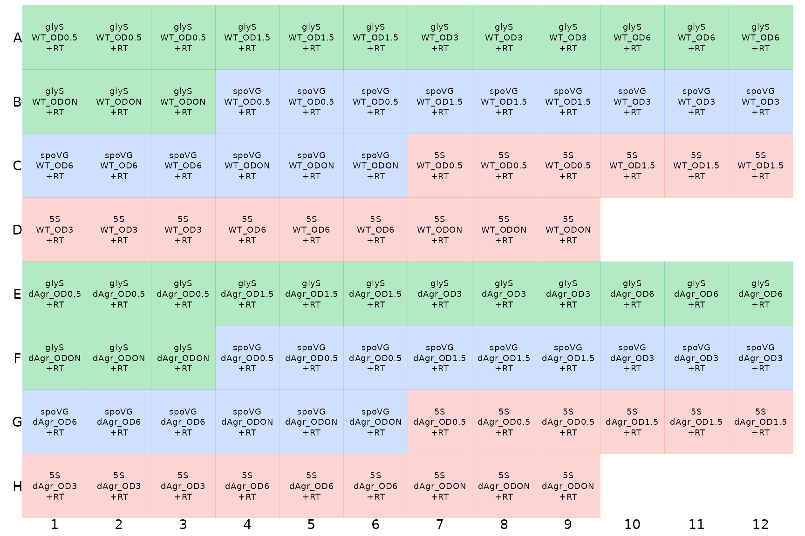
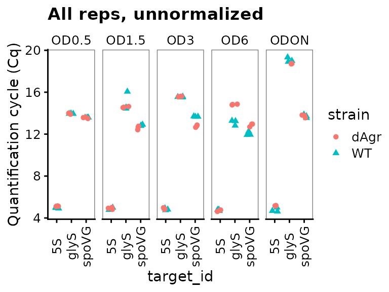
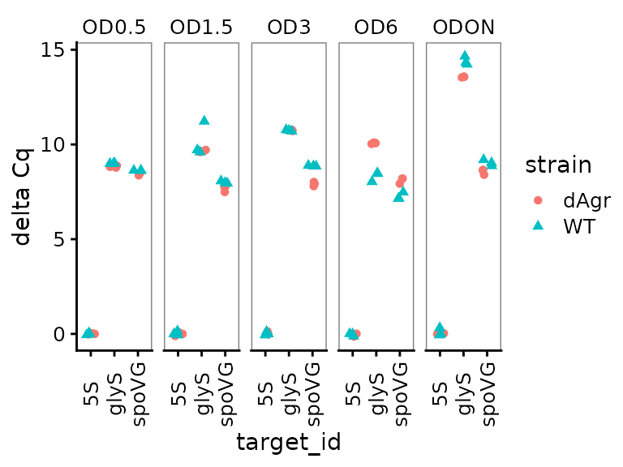
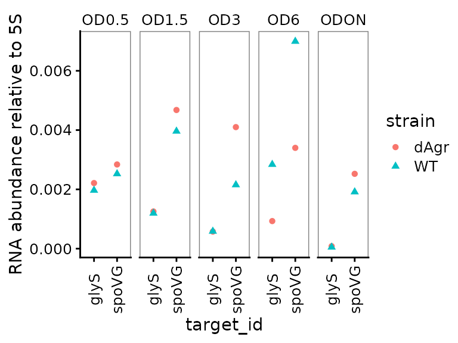
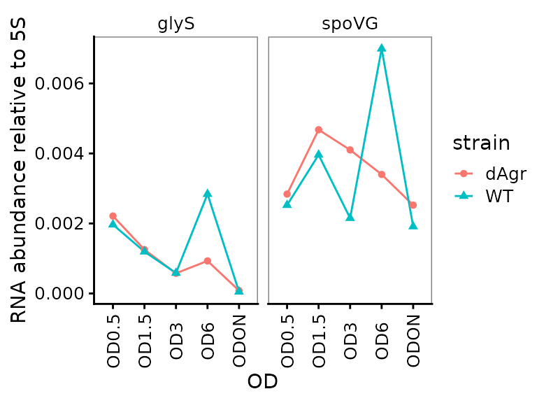
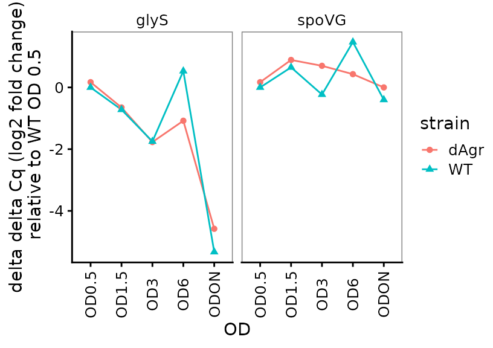
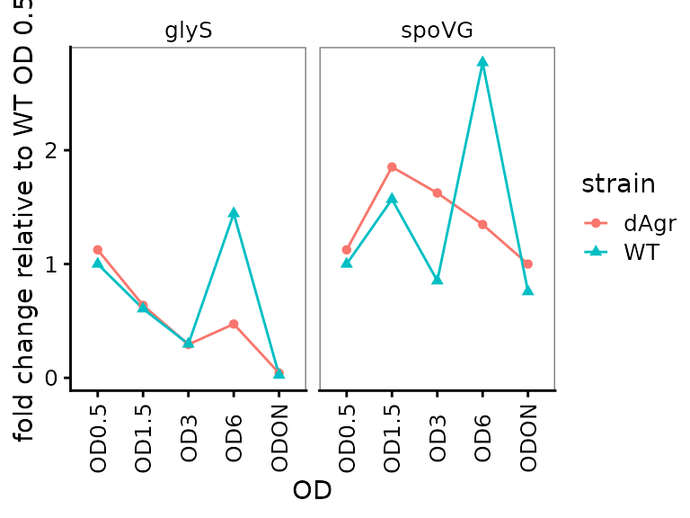

Delta Cq 96-well plate qPCR analysis example
Stuart McKellar and Edward Wallace
April 2022
Source:vignettes/deltacq_96well_vignette.Rmd
deltacq_96well_vignette.RmdSummary: an example 96-well qPCR experiment.
This vignette shows how to use tidyqpcr functions to normalize and plot data from a single RT-qPCR experiment on a 96-well plate. We include relative quantification, calculations of delta Cq (within-sample normalization) and delta delta Cq (between-sample normalization), with some example plots.
This is real RT-qPCR data by Stuart McKellar:
Aim: to measure expression of two mRNAs and one reference control in two strains of bacteria at various growth stages (measured by OD: 0.5, 1.5, 3, 6, and overnight culture, ‘ODON’).
mRNAs: GlyS and SpoVG with 5S rRNA used as a reference control.
Bacterial strains: wild-type (WT) and mutant (dAgr).
Equipment: Data were collected on a Roche LightCycler 480, and LightCycler software used to estimate Cq/Ct values and export that as a text-format table. The sample information is specified in this input data file.
Setup knitr options and load packages
# knitr options for report generation
knitr::opts_chunk$set(
warning = FALSE, message = FALSE, echo = TRUE, cache = FALSE,
results = "show"
)
# Load packages
library(tidyr)
library(ggplot2)
library(dplyr)
library(readr)
library(tidyqpcr)
# set default theme for graphics
theme_set(theme_bw(base_size = 11) %+replace%
theme(
strip.background = element_blank(),
panel.grid = element_blank()
))Loading, organizing, and sanity-checking data.
Load data from machine output file
We start by loading data from the experiment. We print the data to screen here, it is always a good idea to look at the data to find out if it has loaded correctly and behaves as expected, or not.
# NOTE: system.file() accesses data from this R package
# To use your own data, remove the call to system.file(),
# instead pass your data's filename to read_tsv()
# or to another relevant read_ function
file_path_cq <- system.file("extdata",
"Stuart_dAgr_glyS_spoVG_5S_individualWells_Cq_select.txt.gz",
package = "tidyqpcr")
plate_cq_extdata <- file_path_cq %>%
read_tsv()
plate_cq_extdata## # A tibble: 90 × 3
## well sample_info cq
## <chr> <chr> <dbl>
## 1 A1 WT OD0.5 glyS 14.0
## 2 A2 WT OD0.5 glyS 13.9
## 3 A3 WT OD0.5 glyS 14.0
## 4 A4 WT OD1.5 glyS 14.6
## 5 A5 WT OD1.5 glyS 16.1
## 6 A6 WT OD1.5 glyS 14.4
## 7 A7 WT OD3 glyS 15.6
## 8 A8 WT OD3 glyS 15.6
## 9 A9 WT OD3 glyS 15.5
## 10 A10 WT OD6 glyS 12.8
## # … with 80 more rowsPrinting the data here shows that the sample_info column contains information on the sample. We still need to organize this information that is already associated with the data.
The plate setup vignette describes how to “set up” a plate plan to put sample information in, if your input data does not already contain sample information.
Note that we “cleaned up” the data file for this vignette, to remove irrelevant rows and columns. For information about how to load Cq data directly from LightCycler outputs, see ?read_lightcycler_1colour_cq.
Organize sample and target data on the plate
The sample_info column contains values like WT OD0.5 glyS, where WT describes the strain, OD0.5 describes the growth stage (optical density), and glyS describes the target gene that is detected. These three pieces of information are delimited by spaces. We use the separate function, from the tidyr package, to separate the three pieces of information in sample_info into three columns, (strain, OD, target_id), each of which contains a single piece of information. Note that tidyqpcr insistently refers to the targets detected in a qPCR experiment as target_id, as they could be primer sets or hydrolysis probes targeting distinct gene regions, RNA isoforms, SNPs, or chromosomal locations for ChIP studies. In this experiment we have three amplicons, each from a different RNA.
However, tidyqpcr expects a column called sample_id that identifies the unique sample - here, that would be identified by a strain (e.g. WT) and growth stage (e.g. OD0.5). So we use the unite function, from the tidyr package, to create a new column sample_id that unites strain and OD. Note that key tidyqpcr variables: sample_id and target_id, can be defined manually, as done in the plate setup vignette, if your data does not contain a complete and correct sample_info column.
Before these, we have to do a little organization. We add row and column labels for each well, so that we can later draw the plate plan and check the description. We use the tidyqpcr function create_blank_plate_96well to make a “blank” plate plan, then join that information to the data. The join function inner_join is in the dplyr package.
We use the tidyverse pipe operator %>% to do all these transformations in a row, with one on each line.
plate_cq_data <-
create_blank_plate_96well() %>% # row and column labels for each well
inner_join(plate_cq_extdata) %>% # join that info to loaded data
# next separate the sample and target information for future data analysis
separate(sample_info,
into = c("strain","OD","target_id"),
sep = " ",
remove = FALSE) %>%
unite("sample_id",strain, OD, remove = FALSE) %>% # put sample_id together
mutate(prep_type = "+RT") # add information on cDNA prep type
plate_cq_data## # A tibble: 90 × 10
## well well_row well_col sample_info sample_id strain OD target_id cq
## <chr> <fct> <fct> <chr> <chr> <chr> <chr> <chr> <dbl>
## 1 A1 A 1 WT OD0.5 glyS WT_OD0.5 WT OD0.5 glyS 14.0
## 2 A2 A 2 WT OD0.5 glyS WT_OD0.5 WT OD0.5 glyS 13.9
## 3 A3 A 3 WT OD0.5 glyS WT_OD0.5 WT OD0.5 glyS 14.0
## 4 A4 A 4 WT OD1.5 glyS WT_OD1.5 WT OD1.5 glyS 14.6
## 5 A5 A 5 WT OD1.5 glyS WT_OD1.5 WT OD1.5 glyS 16.1
## 6 A6 A 6 WT OD1.5 glyS WT_OD1.5 WT OD1.5 glyS 14.4
## 7 A7 A 7 WT OD3 glyS WT_OD3 WT OD3 glyS 15.6
## 8 A8 A 8 WT OD3 glyS WT_OD3 WT OD3 glyS 15.6
## 9 A9 A 9 WT OD3 glyS WT_OD3 WT OD3 glyS 15.5
## 10 A10 A 10 WT OD6 glyS WT_OD6 WT OD6 glyS 12.8
## # … with 80 more rows, and 1 more variable: prep_type <chr>Again, we print the table to check that the columns and data are correct.
Display the plate layout
It is easier to understand pictures than tables of text. To display the layout of samples within a microplate, tidyqpcr has a function display_plate_qpcr. We use that here to show how the samples are laid out within the plate.
display_plate_qpcr(plate_cq_data)
Here, the different colours indicate different target_ids, which is default behaviour of display_plate_qpcr. This display makes it possible to see that there are three identically-labeled wells - technical replicates - in a row.
Plot unnormalized Cq data
Next we plot all the data to visualise the unnormalised data points. These visual explorations are a crucial sanity check, both on the data itself, and also on any possible mistakes made when loading the data and assigning labels.
Here we use functions from ggplot to plot the data. The interesting output is Cq values, which go on the y axis. The data measures three target genes in two strains in five different growth conditions. So the first plot we make has one plot panel or facet for each growth condition. Each facet shows values for all three targets and two strains, with the targets on the x-axis and strains indicated by colour and shape.
ggplot(data = plate_cq_data) +
geom_point(aes(x = target_id, y = cq, shape = strain, colour = strain),
position = position_jitter(width = 0.2, height = 0)
) +
labs(
y = "Quantification cycle (Cq)",
title = "All reps, unnormalized"
) +
facet_wrap(~OD,ncol=5) +
theme(axis.text.x = element_text(angle = 90, vjust = 0.5))
The plot shows that Cq values for 5S are reproducible and very low (Cq about 5) for all samples. That makes biological sense as 5S ribosomal rRNA is extremely abundant.
More generally, the plot shows that the technical replicates are very close together. Technical replicates are expected to be close to each other, so this observation visually confirms that we have labeled the wells correctly.
Normalized data: delta Cq
Normalize Cq to 5S rRNA, within Sample only
Next we “normalize” by calculating delta Cq () for each target in each sample. We treat the 5S rRNA as a reference gene, and for other mRNA targets estimate a delta_cq value of the difference against the median value for 5S rRNA within the same sample. This normalisation is performed by the calculate_deltacq_bysampleid function. This function works as follows:
- You provide the data and the name of the reference gene (i.e.
ref_target_ids = "5S") - The function will calculate the median Cq of the reference gene separately for each sample
- Then the function will subtract that value from the Cq for every other measured gene, again separately for each sample, adding a
delta_cqcolumn to its output data - The function also calculates relative abundance or normalized ratio to the reference targets, , adding a
rel_abundcolumn to its output data.
If you use multiple reference target ids, the function will take the median across Cq values of all the reference target ids. You can also ask the function to use a different summary, e.g. mean instead of median. See the help file ?calculate_deltacq_bysampleid for more details.
As ever, we print the data to screen as a sanity check.
plate_norm <- plate_cq_data %>%
calculate_deltacq_bysampleid(ref_target_ids = "5S")
plate_norm## # A tibble: 90 × 13
## well well_row well_col sample_info sample_id strain OD target_id cq
## <chr> <fct> <fct> <chr> <chr> <chr> <chr> <chr> <dbl>
## 1 E1 E 1 dAgr OD0.5 gl… dAgr_OD0… dAgr OD0.5 glyS 13.9
## 2 E2 E 2 dAgr OD0.5 gl… dAgr_OD0… dAgr OD0.5 glyS 13.9
## 3 E3 E 3 dAgr OD0.5 gl… dAgr_OD0… dAgr OD0.5 glyS 14
## 4 F4 F 4 dAgr OD0.5 sp… dAgr_OD0… dAgr OD0.5 spoVG 13.6
## 5 F5 F 5 dAgr OD0.5 sp… dAgr_OD0… dAgr OD0.5 spoVG 13.6
## 6 F6 F 6 dAgr OD0.5 sp… dAgr_OD0… dAgr OD0.5 spoVG 13.5
## 7 G7 G 7 dAgr OD0.5 5S dAgr_OD0… dAgr OD0.5 5S 5.15
## 8 G8 G 8 dAgr OD0.5 5S dAgr_OD0… dAgr OD0.5 5S 5.1
## 9 G9 G 9 dAgr OD0.5 5S dAgr_OD0… dAgr OD0.5 5S 5.12
## 10 E4 E 4 dAgr OD1.5 gl… dAgr_OD1… dAgr OD1.5 glyS 14.6
## # … with 80 more rows, and 4 more variables: prep_type <chr>, ref_cq <dbl>,
## # delta_cq <dbl>, rel_abund <dbl>Plot normalized data, all reps
Similar to above, we plot all the replicates of the normalised data.
ggplot(data = plate_norm) +
geom_point(aes(x = target_id, y = delta_cq, shape = strain, colour = strain),
position = position_jitter(width = 0.2, height = 0)
) +
labs(y = "delta Cq") +
facet_wrap(~OD,ncol=5) +
theme(axis.text.x = element_text(angle = 90, vjust = 0.5))
This looks quite similar to the unnormalized data plot, except as expected the reference gene samples are all now deltaCq = 0, and there are small movements in the other points reflecting the normalization process.
Calculate a summary value for each sample-target combination
Having made normalized values, we use group_by and summarize from the dplyr package to calculate the median values of delta_cq and rel_abund for each sample. This makes a smaller table by collapsing 3 technical replicates into a single summary value for each sample_id-target_id combination.
plate_med <- plate_norm %>%
group_by(sample_id, strain, OD, target_id) %>%
summarize(
delta_cq = median(delta_cq, na.rm = TRUE),
rel_abund = median(rel_abund, na.rm = TRUE)
)
plate_med## # A tibble: 30 × 6
## # Groups: sample_id, strain, OD [10]
## sample_id strain OD target_id delta_cq rel_abund
## <chr> <chr> <chr> <chr> <dbl> <dbl>
## 1 dAgr_OD0.5 dAgr OD0.5 5S 0 1
## 2 dAgr_OD0.5 dAgr OD0.5 glyS 8.82 0.00221
## 3 dAgr_OD0.5 dAgr OD0.5 spoVG 8.46 0.00284
## 4 dAgr_OD1.5 dAgr OD1.5 5S 0 1
## 5 dAgr_OD1.5 dAgr OD1.5 glyS 9.64 0.00125
## 6 dAgr_OD1.5 dAgr OD1.5 spoVG 7.74 0.00468
## 7 dAgr_OD3 dAgr OD3 5S 0 1
## 8 dAgr_OD3 dAgr OD3 glyS 10.8 0.000577
## 9 dAgr_OD3 dAgr OD3 spoVG 7.93 0.00410
## 10 dAgr_OD6 dAgr OD6 5S 0 1
## # … with 20 more rowsIt can be easier to focus on a smaller subset of the data. Here we print just the data for a single target, glyS:
filter(plate_med, target_id == "glyS")## # A tibble: 10 × 6
## # Groups: sample_id, strain, OD [10]
## sample_id strain OD target_id delta_cq rel_abund
## <chr> <chr> <chr> <chr> <dbl> <dbl>
## 1 dAgr_OD0.5 dAgr OD0.5 glyS 8.82 0.00221
## 2 dAgr_OD1.5 dAgr OD1.5 glyS 9.64 0.00125
## 3 dAgr_OD3 dAgr OD3 glyS 10.8 0.000577
## 4 dAgr_OD6 dAgr OD6 glyS 10.1 0.000930
## 5 dAgr_ODON dAgr ODON glyS 13.6 0.0000822
## 6 WT_OD0.5 WT OD0.5 glyS 8.99 0.00197
## 7 WT_OD1.5 WT OD1.5 glyS 9.71 0.00119
## 8 WT_OD3 WT OD3 glyS 10.7 0.000585
## 9 WT_OD6 WT OD6 glyS 8.46 0.00284
## 10 WT_ODON WT ODON glyS 14.3 0.0000489This table confirms that glyS summary Cq values are similar for both strains at a given OD value, and higher at ODON.
Plot delta Cq for each OD separately across genes
Here we plot the summarized delta Cq, which now has a single point for each sample_id-target_id combination (representing the summary of the three technical replicates). As above, we plot OD on a separate facet panel to emphasizes comparisons between target genes at the same OD. We exclude the reference target gene, 5S, because for that delta Cq is always zero.
ggplot(data = filter(plate_med, target_id != "5S") ) +
geom_point(aes(x = target_id, y = delta_cq, shape = strain, colour = strain) ) +
labs(
y = "delta Cq"
) +
facet_wrap(~OD,ncol=5) +
theme(axis.text.x = element_text(angle = 90, vjust = 0.5))
Plot relative abundance for each OD separately across genes
The calculate_deltacq_bysampleid function also reports abundance relative to reference target, 5S rRNA. Precisely, this is . Now we plot the relative abundance, again with each OD on a separate facet panel, which emphasizes comparisons between target genes at the same OD.
ggplot(data = filter(plate_med, target_id != "5S") ) +
geom_point(aes(x = target_id, y = rel_abund, shape = strain, colour = strain) ) +
labs(
y = "RNA abundance relative to 5S"
) +
facet_wrap(~OD,ncol=5) +
theme(axis.text.x = element_text(angle = 90, vjust = 0.5))
Plot relative abundance for each gene separately across ODs
Here we plot the summarized relative abundance a different way: each target gene on a separate facet panel. This emphasizes changes in each target genes across ODs.
ggplot(data = filter(plate_med, target_id != "5S") ) +
geom_line(aes(x = OD, y = rel_abund, colour = strain, group = strain)) +
geom_point(aes(x = OD, y = rel_abund, shape = strain, colour = strain)) +
labs(
y = "RNA abundance relative to 5S"
) +
facet_wrap(~target_id,ncol=2) +
theme(axis.text.x = element_text(angle = 90, vjust = 0.5))
We included this alternate plot to emphasize that the flexibility of ggplot enables trying of many different plotting strategies, to find one that is most appropriate for your data.
Doubly normalized data: delta delta Cq
Calculate delta delta cq against a chosen reference sample
Our goal here is to compare the normalized levels of glyS and spoVG in one growth condition to another growth condition, i.e. delta delta Cq (). This is an estimate of log2 fold change. In this case, the reference growth condition is the wild-type strain at OD 0.5.
This relies on a function in tidyqpcr, calculate_deltadeltacq_bytargetid.
- You provide data with
delta_cqalready calculated, and the name of the reference samples (i.e.ref_sample_ids = "WT_OD0.5") - The function will calculate the median delta_cq of the reference samples separately for each target.
- Then the function will subtract that value from the
delta_cqfor every other measured gene, again separately for each sample, adding adeltadelta_cqcolumn to its output data - The function also calculates fold change of targets with respect to the reference samples, , adding a
fold_changecolumn to its output data.
If you use multiple reference sample ids, the function will take the median across Cq values of all the reference target ids. For example, you might use multiple biological replicate samples of a single set of conditions. You can also ask the function to use a different summary, e.g. mean instead of median. See the help file ?calculate_deltadeltacq_bytargetid for more details.
plate_deltanorm <- plate_norm %>%
calculate_deltadeltacq_bytargetid(ref_sample_ids = "WT_OD0.5")
plate_deltanorm_med <- plate_deltanorm %>%
group_by(sample_id, strain, OD, target_id) %>%
summarize(
deltadelta_cq = median(deltadelta_cq, na.rm = TRUE),
fold_change = median(fold_change, na.rm = TRUE)
)
plate_deltanorm## # A tibble: 90 × 16
## well well_row well_col sample_info sample_id strain OD target_id cq
## <chr> <fct> <fct> <chr> <chr> <chr> <chr> <chr> <dbl>
## 1 G7 G 7 dAgr OD0.5 5S dAgr_OD0.5 dAgr OD0.5 5S 5.15
## 2 G8 G 8 dAgr OD0.5 5S dAgr_OD0.5 dAgr OD0.5 5S 5.1
## 3 G9 G 9 dAgr OD0.5 5S dAgr_OD0.5 dAgr OD0.5 5S 5.12
## 4 G10 G 10 dAgr OD1.5 5S dAgr_OD1.5 dAgr OD1.5 5S 5.01
## 5 G11 G 11 dAgr OD1.5 5S dAgr_OD1.5 dAgr OD1.5 5S 4.93
## 6 G12 G 12 dAgr OD1.5 5S dAgr_OD1.5 dAgr OD1.5 5S 4.82
## 7 H1 H 1 dAgr OD3 5S dAgr_OD3 dAgr OD3 5S 4.98
## 8 H2 H 2 dAgr OD3 5S dAgr_OD3 dAgr OD3 5S 4.85
## 9 H3 H 3 dAgr OD3 5S dAgr_OD3 dAgr OD3 5S 4.83
## 10 H4 H 4 dAgr OD6 5S dAgr_OD6 dAgr OD6 5S 4.76
## # … with 80 more rows, and 7 more variables: prep_type <chr>, ref_cq <dbl>,
## # delta_cq <dbl>, rel_abund <dbl>, ref_delta_cq <dbl>, deltadelta_cq <dbl>,
## # fold_change <dbl>
plate_deltanorm_med## # A tibble: 30 × 6
## # Groups: sample_id, strain, OD [10]
## sample_id strain OD target_id deltadelta_cq fold_change
## <chr> <chr> <chr> <chr> <dbl> <dbl>
## 1 dAgr_OD0.5 dAgr OD0.5 5S 0 1
## 2 dAgr_OD0.5 dAgr OD0.5 glyS 0.170 1.13
## 3 dAgr_OD0.5 dAgr OD0.5 spoVG 0.170 1.13
## 4 dAgr_OD1.5 dAgr OD1.5 5S 0 1
## 5 dAgr_OD1.5 dAgr OD1.5 glyS -0.650 0.637
## 6 dAgr_OD1.5 dAgr OD1.5 spoVG 0.890 1.85
## 7 dAgr_OD3 dAgr OD3 5S 0 1
## 8 dAgr_OD3 dAgr OD3 glyS -1.77 0.293
## 9 dAgr_OD3 dAgr OD3 spoVG 0.700 1.62
## 10 dAgr_OD6 dAgr OD6 5S 0 1
## # … with 20 more rowsNote that in the summarised table plate_deltanorm_med, the reference target 5S has deltadelta_cq = 0 and fold_change = 1 for all entries, because these values were used for normalization.
Plot delta delta Cq (log2-fold change) for each target gene
Here, delta delta Cq is positive when a target is more highly detected in the relevant sample, compared to reference samples.
ggplot(data = filter(plate_deltanorm_med, target_id != "5S") ) +
geom_line(aes(x = OD, y = deltadelta_cq, colour = strain, group = strain)) +
geom_point(aes(x = OD, y = deltadelta_cq, shape = strain, colour = strain)) +
labs(
y = "delta delta Cq (log2 fold change)\n relative to WT OD 0.5"
) +
facet_wrap(~target_id,ncol=2) +
theme(axis.text.x = element_text(angle = 90, vjust = 0.5))
Plot fold change for each target gene
Here we plot the fold change for each target gene, time-course style against OD.
ggplot(data = filter(plate_deltanorm_med, target_id != "5S") ) +
geom_line(aes(x = OD, y = fold_change, colour = strain, group = strain)) +
geom_point(aes(x = OD, y = fold_change, shape = strain, colour = strain)) +
labs(
y = "fold change relative to WT OD 0.5"
) +
facet_wrap(~target_id,ncol=2) +
theme(axis.text.x = element_text(angle = 90, vjust = 0.5))
Conclusion
In this vignette, you have learned the basic workflow for analysing Cq values from qPCR data:
- Create the
sample_idcolumn to uniquely identify each biological sample. - Create the
target_idcolumn to uniquely identify each target amplicon, e.g. detecting one gene. - Calculate delta Cq and relative abundance using
calculate_deltacq_bysampleid. This process normalizes values for each target to the values of one or more reference targets within each sample. - Calculate delta delta Cq and fold change using
calculate_deltadeltacq_bytargetid. This process normalizes the value for each target in each sample to values of the same target in one or more reference samples.
Notes on normalization, reference targets, and reference samples
In this section, we discuss the process of normalization and the choices of reference genes and samples in greater detail.
Normalization is a tool for making specific comparisons in specific experimental designs.
Tidyqpcr automatically implements one common approach, the delta Cq method, in calculate_deltacq_bysampleid. The user picks one or more reference targets, and then within each sample the function calculates the median Cq of the reference targets from all other Cqs. The user can also choose a different summary function such as mean. If a single target id is chosen as reference, then it will be given summary delta Cq of zero; this might be sensible if there is external evidence that this target id genuinely has stable abundance in the conditions being tested. The MIQE guidelines are clear, and correct, that reliable quantification usually requires at least three carefully chosen reference targets.
The next step is to calculate the delta delta Cq, normalising each sample to a control sample. Specifically, calculate_deltadeltacq_bytargetid estimates the relative change in individual target id delta Cq values, compared to their values in one of more reference sample ids. If a single sample id were chosen as reference, then values in that sample will be given summary delta delta Cq of zero. Usually, an experiment would have multiple biological replicates, and all the replicates for a single condition would be chosen as reference sample ids. In that case the delta delta Cq values for each replicate of the reference condition would not be zero, but only the average over these would be zero.
However, the tidyverse and tidyqpcr have the flexibility to do normalization any way that your experiment requires. For example, you might want to use all samples as reference, so that delta delta Cq reports the difference in value between one sample and the average over all samples. Alternatively, for a time course with multiple strains and multiple timepoints, it might be important to compare delta Cq values against a reference strain at each time point instead of globally. These comparisons can be done with a little work using generic data-manipulation functions in the tidyverse, for example dplyr::group_by.
There is more information on the help pages for the functions, ?calculate_deltacq_bysampleid and ?calculate_deltadeltacq_bytargetid.
If you have a specific question about a design that isn’t covered by the functions we have, you’re welcome to ask by creating a new issue on the tidyqpcr github site: https://github.com/ewallace/tidyqpcr/issues/.